Markdown-редактор, который не мешает писать
FgSNotes открывает обычные .md файлы, показывает результат рядом, считает формулы LaTeX и помогает с текстом через ИИ - на вашем компьютере или в облаке. Есть версия для телефона, а оформление меняется одним CSS-файлом.
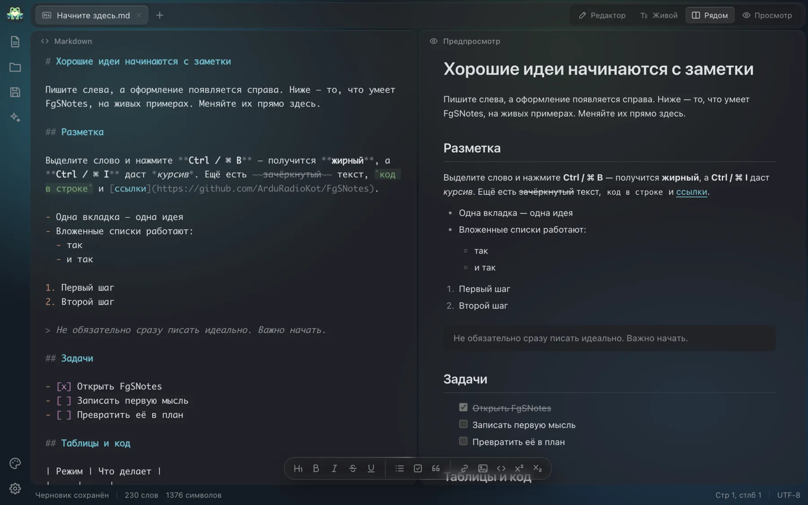
Стеклянное окно
В режиме Liquid Glass панели становятся стеклянными, а на macOS окно полупрозрачно целиком: сквозь него виден рабочий стол. Прозрачность регулируется ползунком, стекло выключается в один клик.
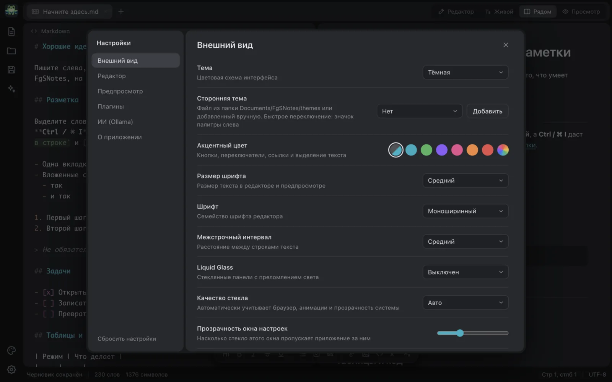
Подсветка без интернета
Markdown и блоки кода раскрашиваются прямо в редакторе: JS, Python, Go, Rust, SQL, JSON и другие.
// Подсветка прямо в редакторе async function loadTheme(name) { const css = await fetch(`themes/${name}.css`); return css.text(); }
Обычные файлы
Открывайте и сохраняйте .md как есть: без облака и своего формата. Черновики сохраняются сами.
- README.md2 КБ
- План недели.md1 КБ
- Идеи.md4 КБ
Запускаемый JavaScript прямо в заметке
Блок js-cell работает как ячейка в Jupyter: запустите его - и результат появится сразу под кодом. Переменные живут между ячейками одной заметки. Запуск - Shift Enter, работает и на телефоне.
const prices = [120, 340, 95]; const total = prices.reduce((a, b) => a + b); console.log(`Итого: ${total}`); total / prices.length
185
27
действий без мыши
Любое сочетание меняется в настройках и работает на русской раскладке. Tab ставит отступ.
- СохранитьCtrl / ⌘ S
- ЖирныйCtrl / ⌘ B
- Режимы: редактор, живой, рядом, просмотрCtrl / ⌘ 1–4
- Чат с ИИCtrl / ⌘ J
Чат с ИИ работает у вас на компьютере
Выделите абзац и нажмите Ctrl / ⌘ J: текст прикрепится к чату, а чат исправит ошибки, сократит, переведёт или продолжит его.
Чат рядом с текстом. Третья панель в режиме «Рядом», ширина меняется мышью. Ответ заменяет выделение, вставляется в заметку или копируется.
Быстрые действия. Продолжить, улучшить, исправить ошибки, сократить, перевести, резюме, список задач, заголовки.
Мастер установки Ollama. Три шага: установка, запуск, модель. Окно само замечает, что шаг пройден, и показывает прогресс скачивания.
| Где работает модель | Провайдеры |
|---|---|
| На компьютере, без интернета | Ollama, LM Studio |
| В облаке, по вашему ключу | OpenAI, Claude, Gemini, OpenRouter, Groq |
| Свой сервер | Любой с API как у OpenAI |
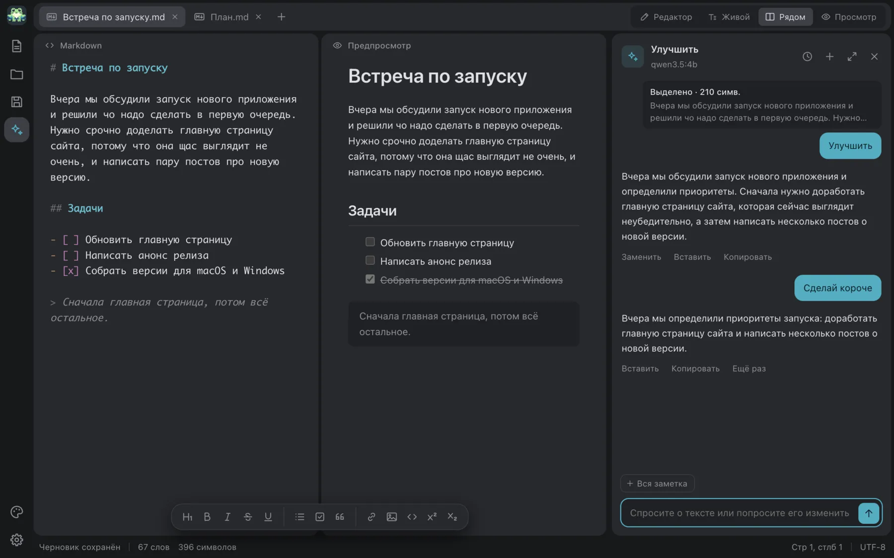
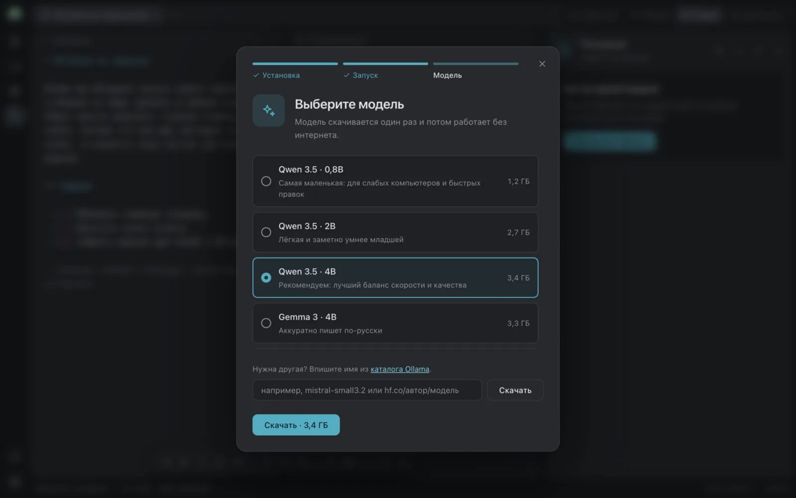
FgSNotes и на телефоне
Те же заметки, предпросмотр и чат. Небольшие модели - Qwen 3.5, Ministral 3, Phi-3.5 mini - скачиваются прямо в приложение и работают без интернета.
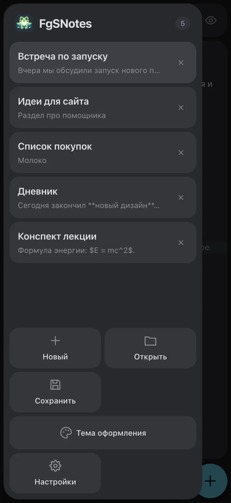
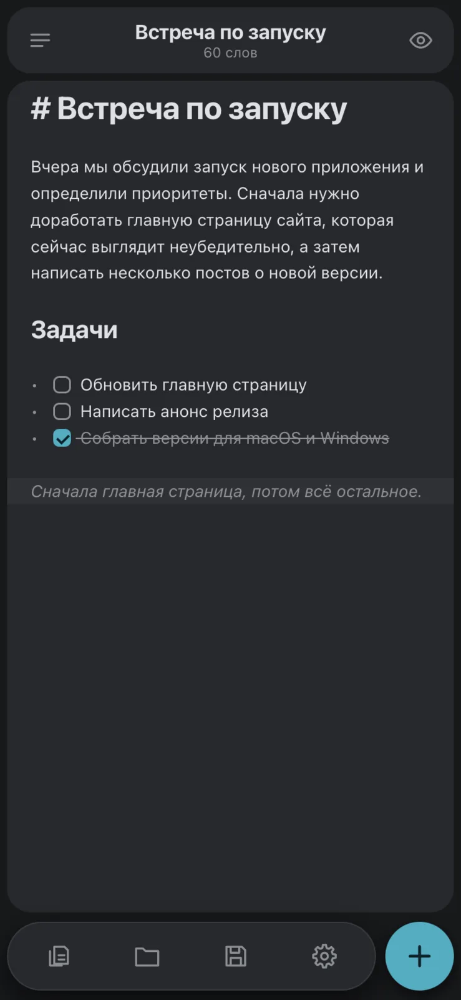
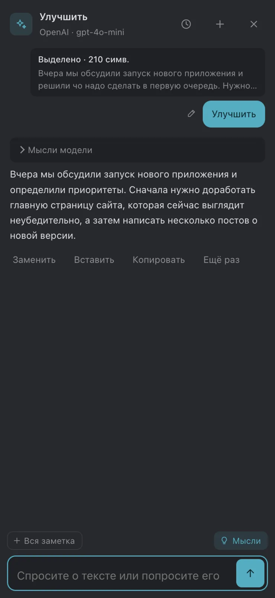
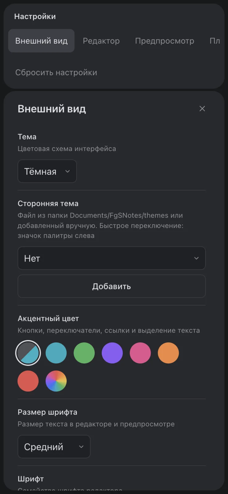
22 темы в одном CSS-файле
Dracula, Nord, GitHub, Solarized и другие. Своя тема - это один файл.
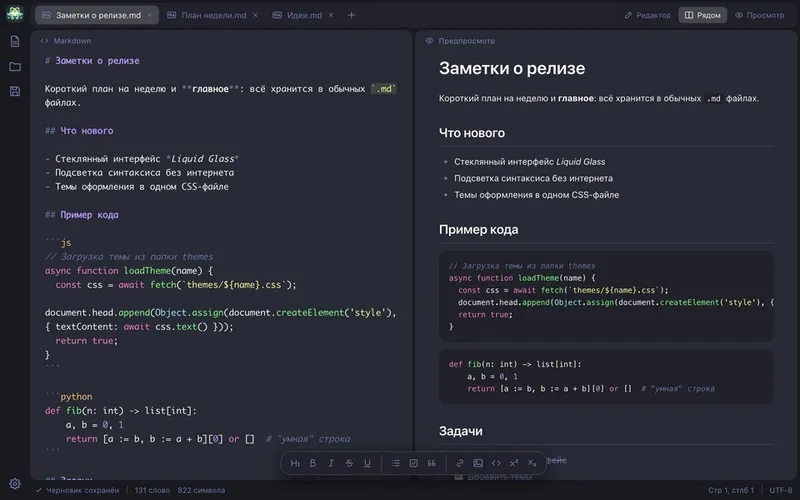
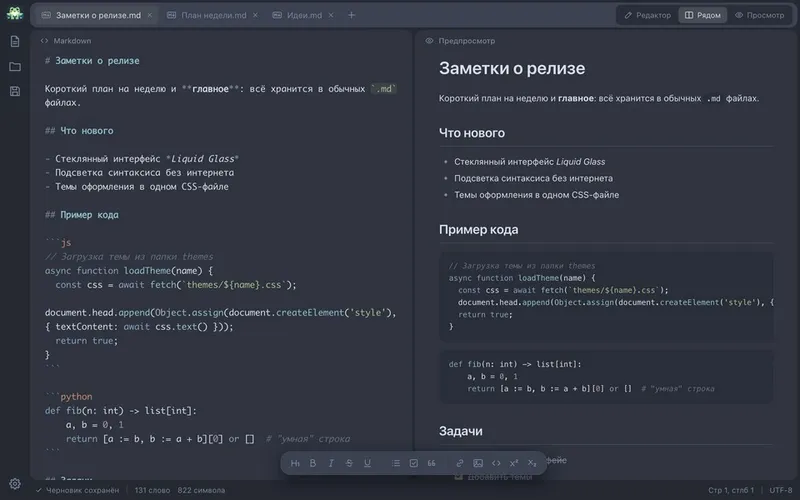
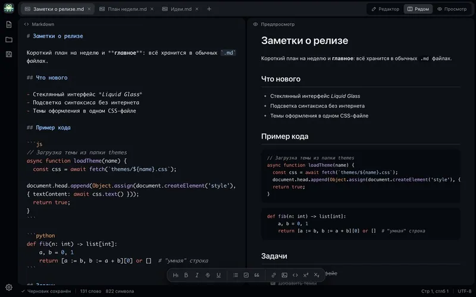
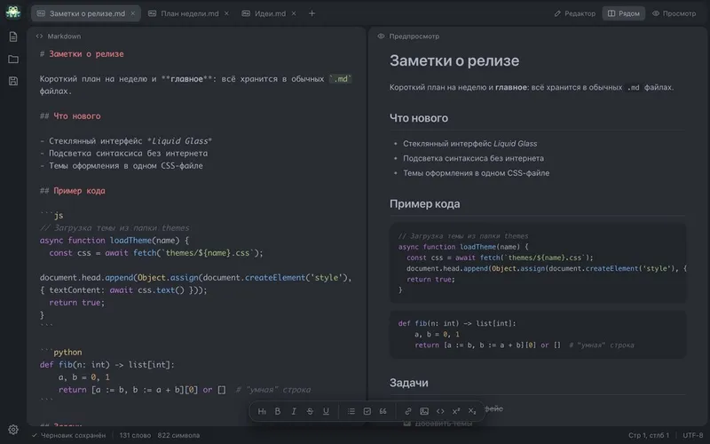
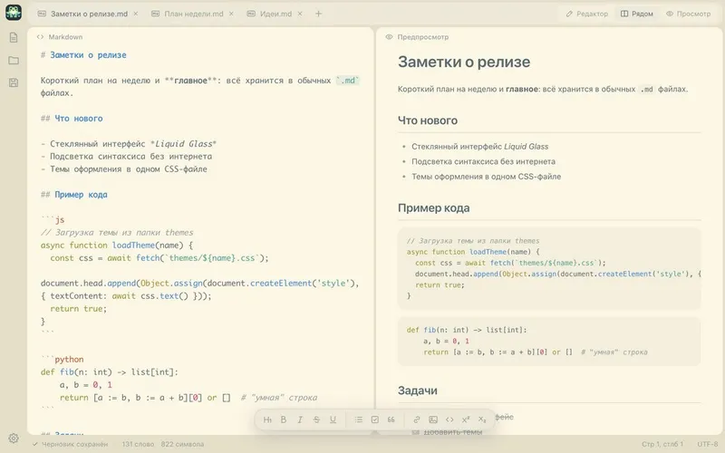
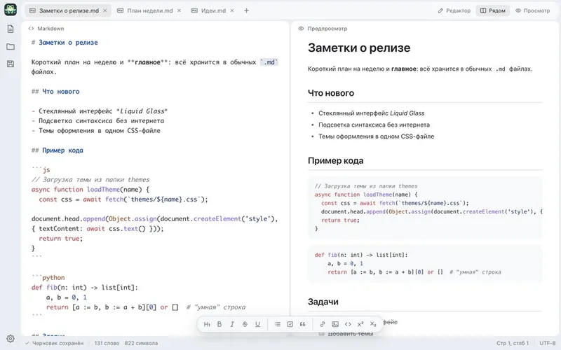
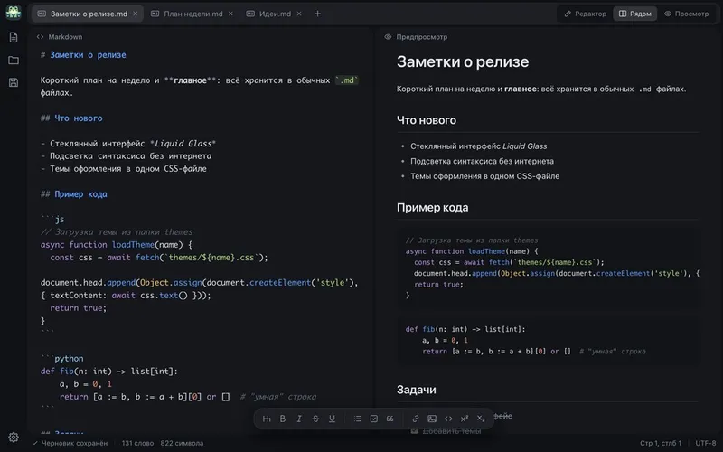
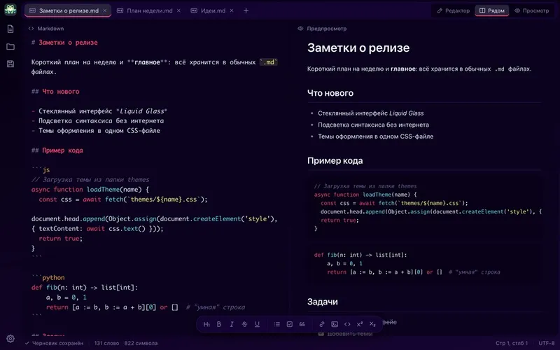
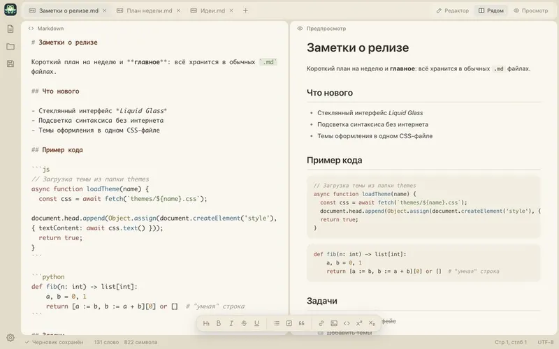
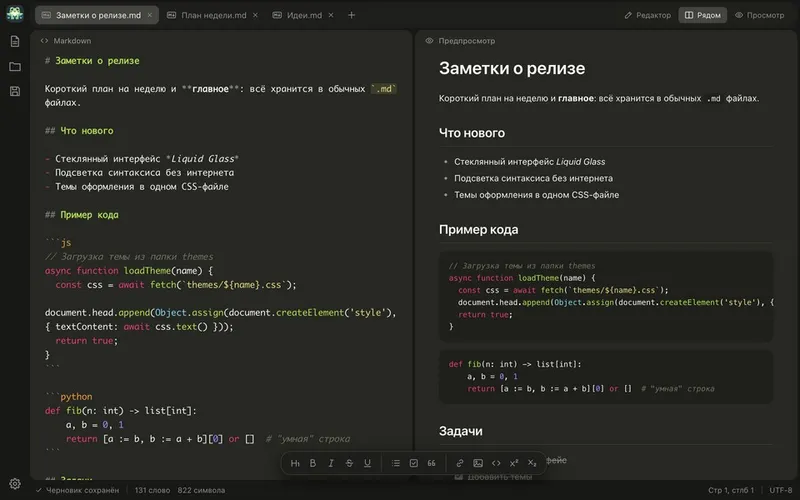
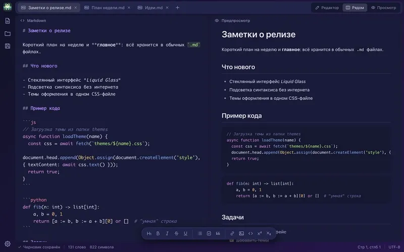
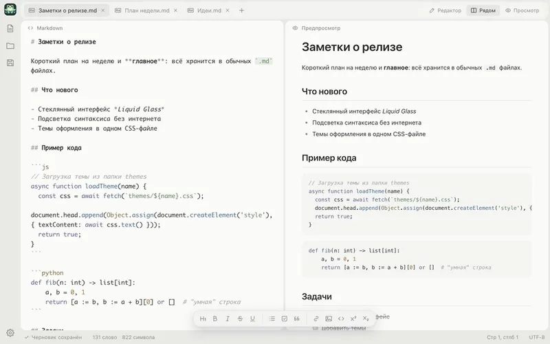
Плагины: рисунок, календарь, Word
Один файл .js добавляет кнопку на левую панель. Свой плагин написать несложно, а ставить стоит только те, которым доверяете: плагин видит все заметки.
Скачать FgSNotes
Версия 2.6.2. Выделенный файл подходит вашей системе.
macOS
Windows и Linux
iPhone и Android
Готовых сборок в сторах пока нет. Соберите приложение сами: iOS - в Xcode, Android - в Android Studio, по инструкции на GitHub.
Сборки пока не подписаны. На macOS при первом запуске откройте приложение через контекстное меню → «Открыть». На Windows в окне SmartScreen нажмите «Подробнее» → «Выполнить в любом случае». На Mac с M1 и новее берите arm64: версия x64 работает через Rosetta в несколько раз медленнее.